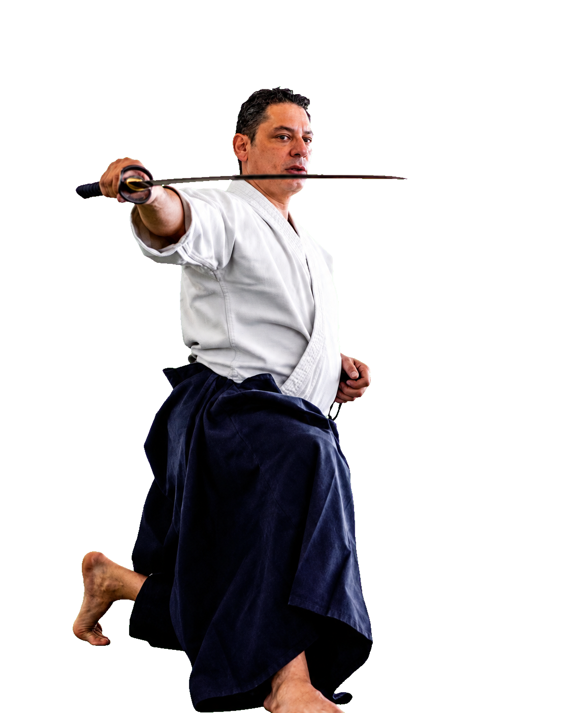
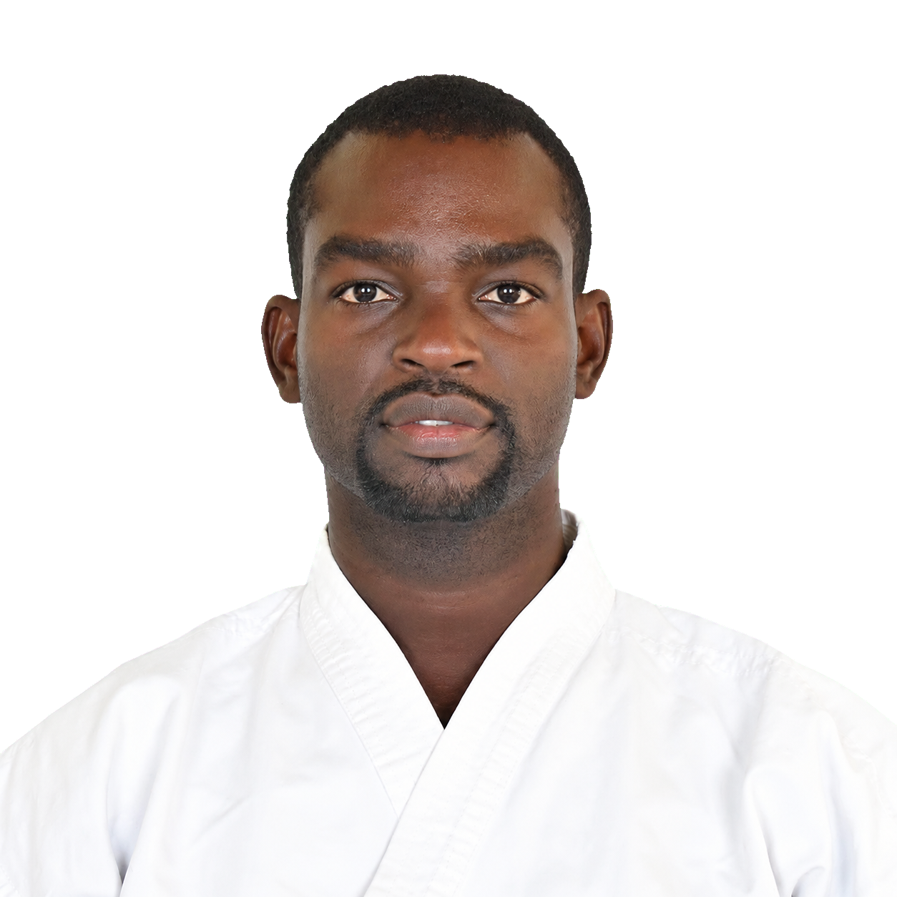
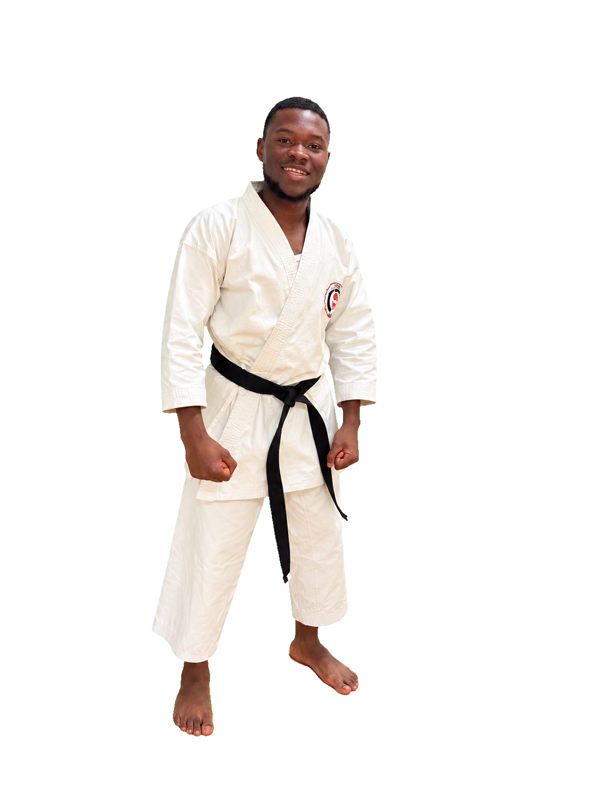
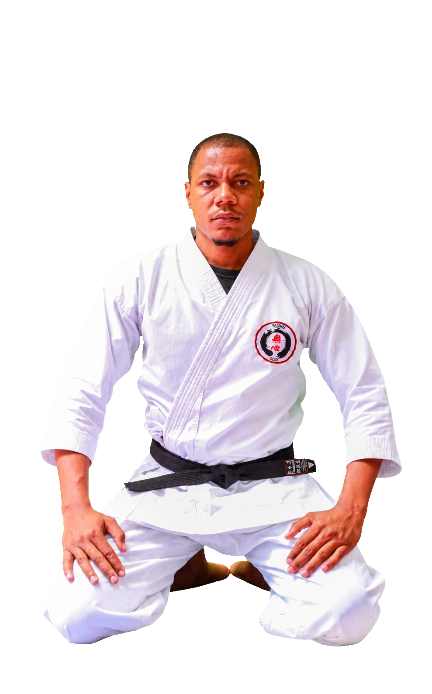
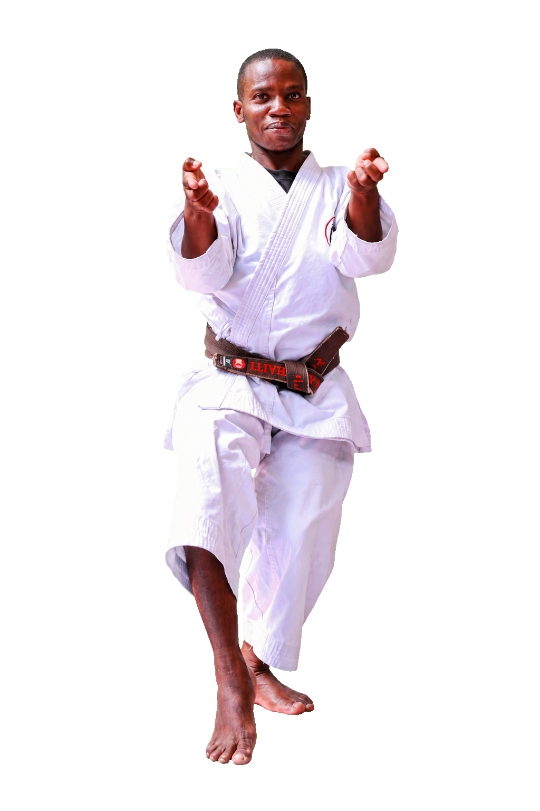

Ceinture Noire & Passion
Nos Instructeurs
Le Mushin Dojo est guidé par des instructeurs qui vivent l'aïkido et le karaté au quotidien — leur parcours, leur grade et leur approche de l'enseignement.
Tradition, Discipline et Rayonnement International
Alejandro Domínguez Sensei est ceinture noire 6e dan d'Aikikai et Shidoin de Sansuikai International. Fondateur et directeur du Shugyo Shin Dojo Aikikai République Dominicaine, il totalise plus de 30 ans de pratique et anime des séminaires internationaux à travers l'Amérique et l'Europe. Formé directement auprès de Maître Yoshimitsu Yamada Shihan (8e dan), disciple d'O'Sensei Morihei Ueshiba, il représente l'Aikikai en République Dominicaine depuis 2004 et apporte un soutien technique au Mushin Dojo en Haïti. Pour lui, l'Aïkido est une discipline martiale, éthique et culturelle qui transmet le respect, la paix et le dépassement de soi.
Sensei Alejandro Domínguez
6e Dan Aikikai — Directeur Technique, Shugyo Shin Dojo



Fondateur, Enseignement et Harmonisation des Énergies
Né au Cap-Haïtien en 1990, Worlkings Belotte est fondateur et directeur technique du Mushin Dojo. Élève de Sensei James Osmard, il obtient sa ceinture noire nationale en 2013 et devient plusieurs fois champion régional, départemental et national. Passionné par l'enseignement depuis ses études universitaires, il cumule aujourd'hui plus de quinze ans d'expérience dans la transmission du karaté. En 2016, il entame l'étude de l'aïkido auprès de Sensei Alejandro Domínguez (6e dan Aikikai), et continue aujourd'hui à faire rayonner les arts martiaux en Haïti.
Worlkings Belotte
Fondateur | Directeur Technique — 4e Dan Karaté, 3e Dan Aïkido
Discipline, Persévérance et Esprit d'Équipe
Dalean Pierre-Whidjy, 21 ans, pratique le karaté depuis 2021 et est aujourd'hui ceinture noire 1er dan, obtenue en 2025 — il pratique également l'aïkido, où il détient le grade de 2e kyu. Élève direct de Sensei Belotte Worlkings, son parcours témoigne d'un travail constant, d'une régularité et d'une détermination qui l'animent au quotidien. Il transmet à travers sa pratique des valeurs essentielles : discipline, persévérance, respect, maîtrise de soi et esprit d'équipe.
Dalean Pierre-Whidjy
Ceinture Noire 1er Dan Karaté, 2e Kyu Aïkido


Honnêteté, Respect et Maîtrise de Soi
Sensei Morpeau Fleming Luckner pratique le karaté depuis l'âge de 15 ans et est aujourd'hui ceinture noire 2e dan. Son enseignement repose sur les valeurs fondamentales de l'art martial — honnêteté, respect, discipline et maîtrise de soi — qu'il transmet avec autant de rigueur que de bienveillance. Passionné par la formation des jeunes et des adultes, il accompagne chaque élève dans sa progression technique, physique et personnelle, faisant du karaté un véritable chemin de développement humain.
Morpeau Fleming Luckner
Ceinture Noire 2e Dan, Karaté
Un Parcours d'Excellence et de Transmission
Sensei Nick Widler Normil pratique le karaté depuis 2001, sous la direction initiale de Sensei Abraham Celibien. Aujourd'hui ceinture noire 5e dan Shotokan et 3e dan Goju-Ryu, il cumule plus de vingt ans d'expérience et un palmarès national reconnu, ayant représenté Haïti dans plusieurs compétitions internationales et remporté le championnat national à plusieurs reprises. Il transmet à ses élèves le respect, la patience, la modestie, l'humilité et le courage, avec le désir de faire perdurer cet héritage martial pour les générations futures.
Nick Widler Normil
Ceinture Noire 5e Dan Shotokan, 3e Dan Goju-Ryu
